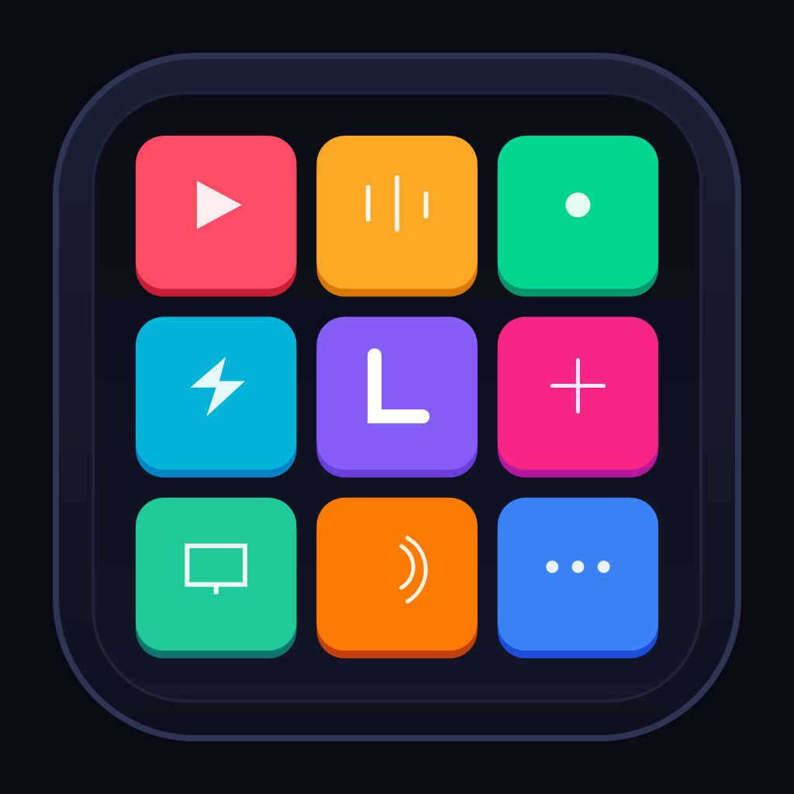

Telefon veya tabletinizi güçlü bir mekanik makro kumandasına dönüştürün. Windows bilgisayarınızı tek dokunuşla yönetin.
İndirilen kurulum dosyasını çalıştırın; LigoDeck saniyeler içinde otomatik olarak kurulur ve PC'niz mobilden bağlanmaya hazır olur.
Masaüstü İndir & Kur (Windows)LigoDeck-Setup.exe dosyasını indirin ve açın. Tek tıkla otomatik kurulur ve masaüstü kısayolu oluşturulur.
Touch Portal ve pahalı donanım konsollarına modern, açık ve güçlü alternatif.
Mekanik 3D tuş basış derinliği, yumuşak pastel renk paleti ve yüksek çözünürlüklü vektör simgelerle parlamasız, oyuncak gibi şık arayüz.
Bulut sunucularına veya internete ihtiyaç duymaz. Yerel ağınız üzerinden ultra-düşük gecikmeli güvenli WebSocket iletişimi sağlar.
Tek tuşla karmaşık tuş kombinasyonları (Hold, Tap, Release), ses kontrolü, uygulama başlatma, if/else mantığı ve çoklu sayfalar.
Masaüstü ajanı yerleşik Bento düzenleyici ile gelir. Profillerinizi, tuşlarınızı, renklerinizi ve makrolarınızı fareyle sürükleyip yapılandırın.